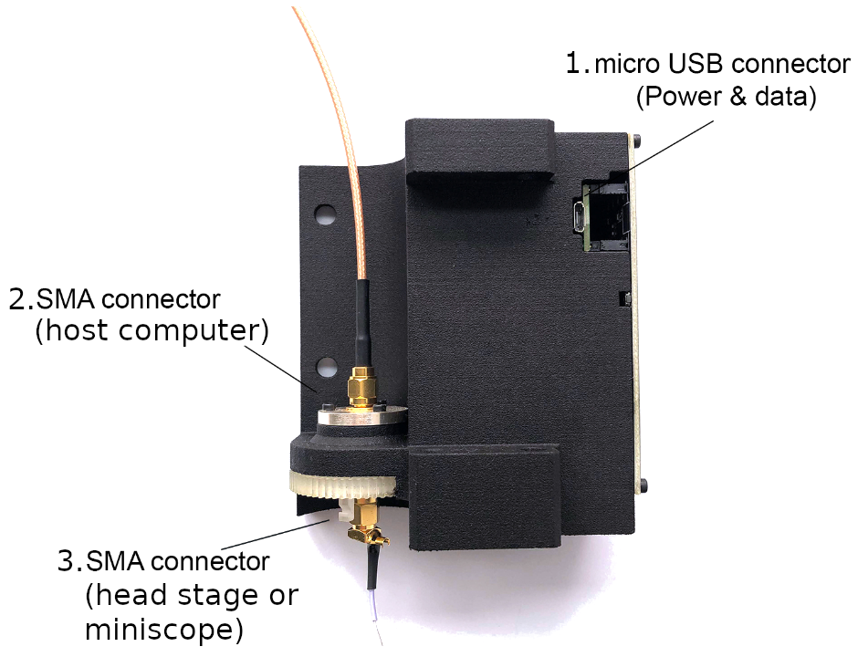

Quick Start Guide#
Important
Although this example uses Bonsai and Windows, the commutator communicates over a serial connection using a simple set of JSON commands and therefore is software and operating system agnostic.
This quick start guide provides a basic setup instructions to verify the commutator’s functionality. By following these steps, you will be able to turn the commutator using keyboard presses from a Bonsai Visual Programming Language workflow.
If you have not already done so,
Open Bonsai and install the Bonsai.StarterPack package
Connect a computer to the commutator using a micro-USB cable (connector 1 in the figure below) to establish power and communication between the commutator and the computer. For this quick start guide, the coaxial connections are not needed.
Note
The commutator’s RGB LED will flash red when the commutator is plugged in. During this time, the commutator is charging an internal supercapacitor bank that prevents the motor from loading the USB port. This can take up to 30 seconds to complete.
Position the commutator on a table and ensure there is nothing preventing the commutator’s gears from rotating freely.
Download and run the following .bonsai file (also known as a “workflow”) for controlling the commutator using key presses: